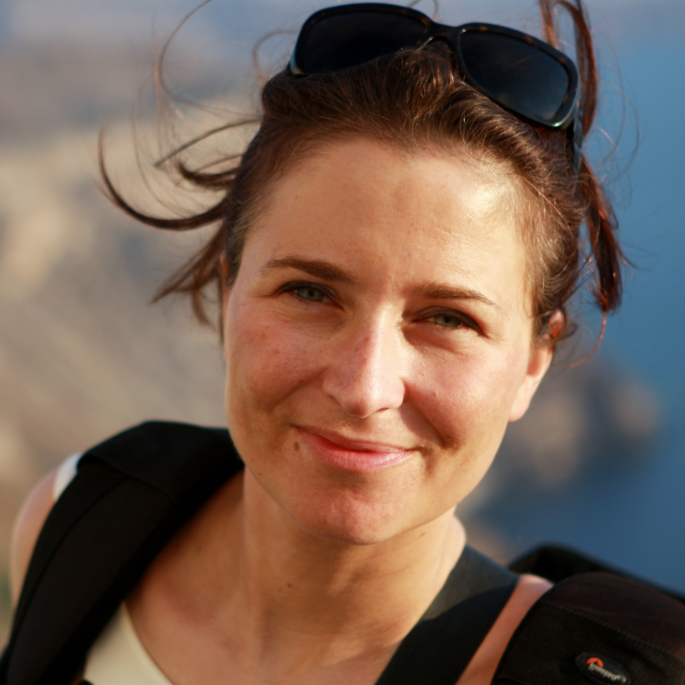

Marilaure Grégoire
Full Professor · MAST & FOCUS · University of Liège, Belgium
I am a Full Professor at the University of Liège (Belgium), head of the MAST (Modelling for Aquatic Systems) research group and Director of FOCUS (Freshwater and Oceanic Science Unit of research). My research focuses on developing and applying mathematical models to understand and predict marine ecosystems and biogeochemical cycles, with emphasis on ocean deoxygenation, data assimilation, and climate change impacts on marine environments. I am involved in numerous European projects and international expert groups, contributing to marine policy and environmental assessment.
News
-
Please wait
News items are being loaded.